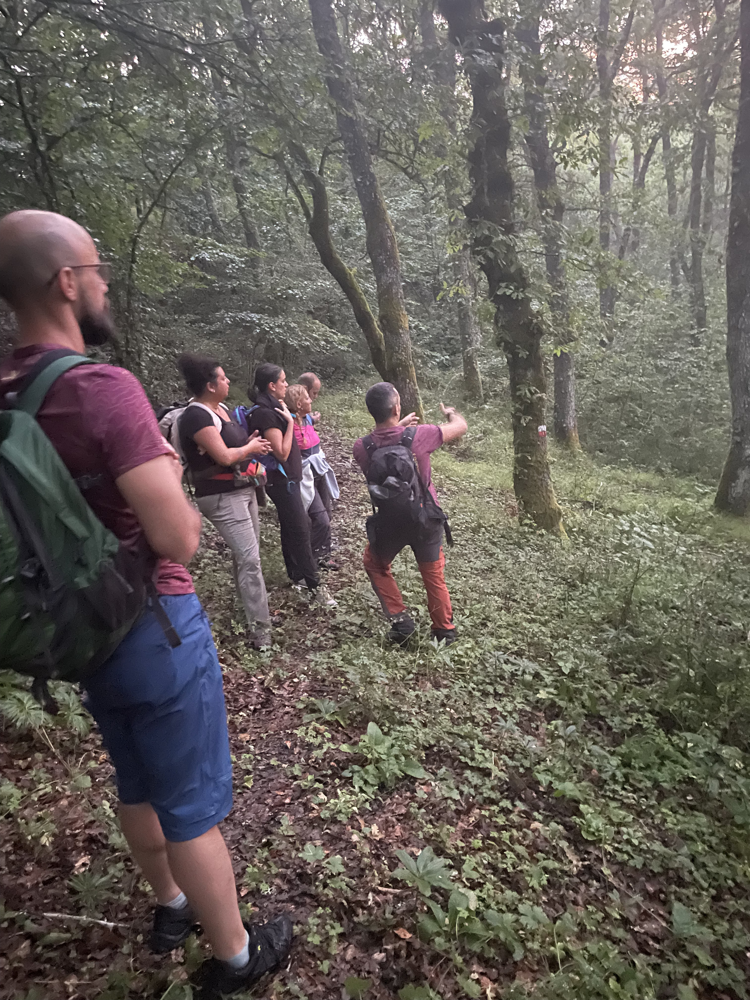
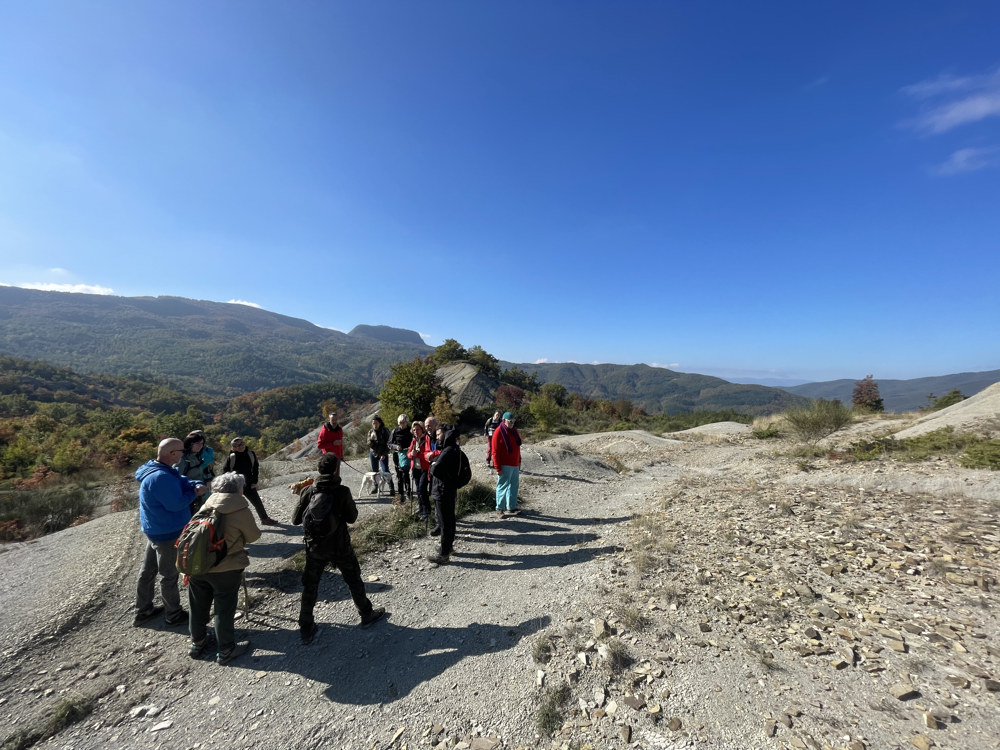
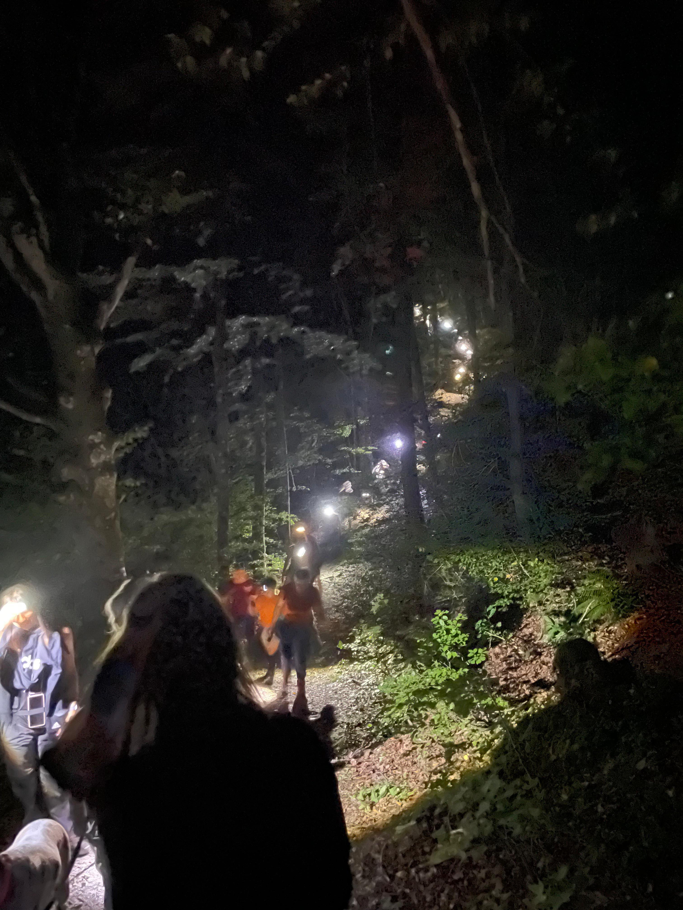

Escursioni
Escursioni didattiche di varia lunghezza con possibilità di degustazioni presso piccole realtà locali, con le seguenti tematiche:
- Ecologia della fauna selvatica
- Lettura del paesaggio
- Tracce e segni di presenza
- Appostamenti crepuscolari
- Uso di fototrappole e osservazione indiretta



